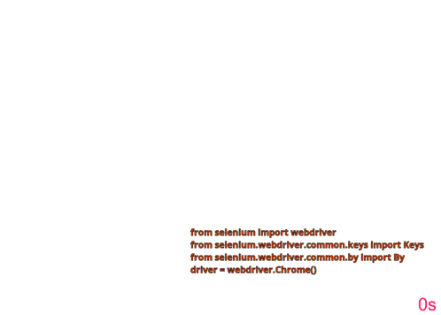

Class 6: Testing Web Pages#
Install Selenium, a browser automation tool, with pip install selenium.
Example 1: Test webpage links#
Execute interactively (IPython) the following code snippet, to test accessibility of webpage links
from selenium import webdriver
from selenium.webdriver.common.keys import Keys
from selenium.webdriver.common.by import By
import requests
# access chromedriver, may need to set its binary as trusted - remove quarantine attribute on MacOS
driver = webdriver.Chrome()
# provide website url here
driver.get("http://demo.guru99.com/test/newtours/")
# get all links
all_links = driver.find_elements(By.CSS_SELECTOR,"a")
# check each link if it is broken or not
for link in all_links:
# extract url from href attribute
url = link.get_attribute('href')
# end request to the url and get the result
result = requests.head(url)
#if status code is not 200 then print the url (customize the if condition according to the need)
if result.status_code != 200:
print(url, result.status_code)
Note: the code adapted from this Python tutorial on Selenium. See also this Java tutorial.
Example 2: Test page search#
Execute interactively (IPython) the following code snippet, to test searching the class webpage:
from selenium import webdriver
from selenium.webdriver.common.keys import Keys
from selenium.webdriver.common.by import By
# test if the class page is searchable
driver = webdriver.Chrome()
driver.get("https://maciejskorski.github.io/software_engineering")
elem = driver.find_element(By.CLASS_NAME,"search-button")
elem.click()
elem = driver.find_element(By.NAME,"q")
elem.send_keys("UML")
elem.send_keys(Keys.RETURN)
assert "No results found." not in driver.page_source
The animation below shows how the browser react to subsequent code steps:
